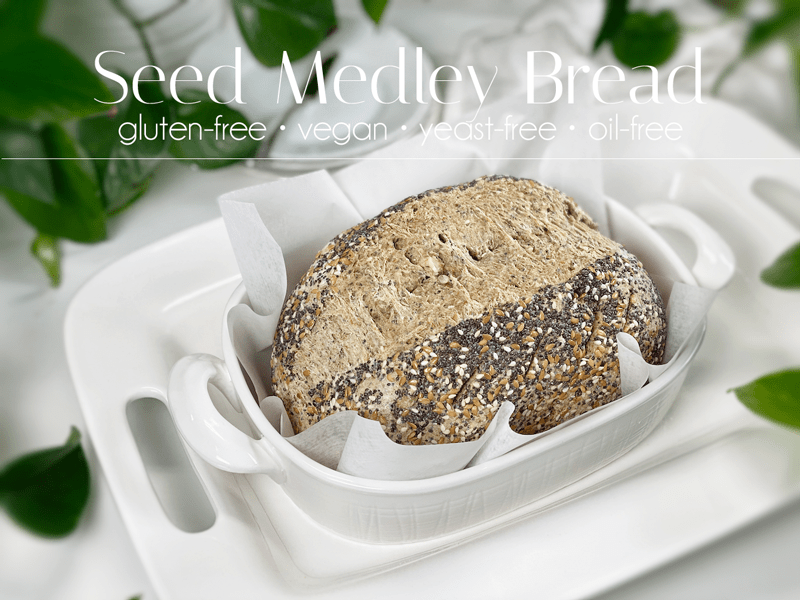
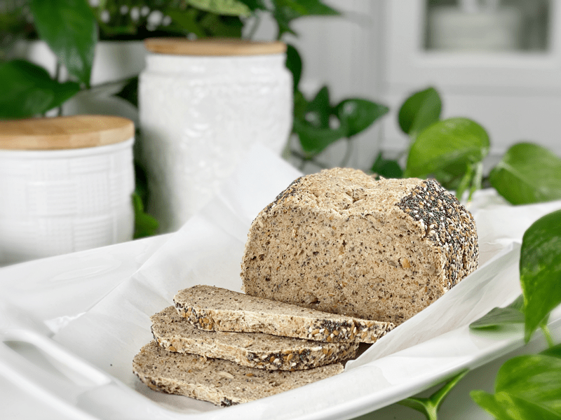
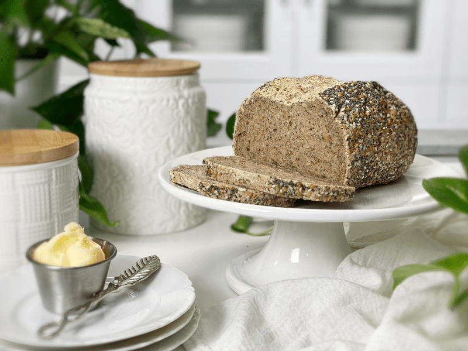
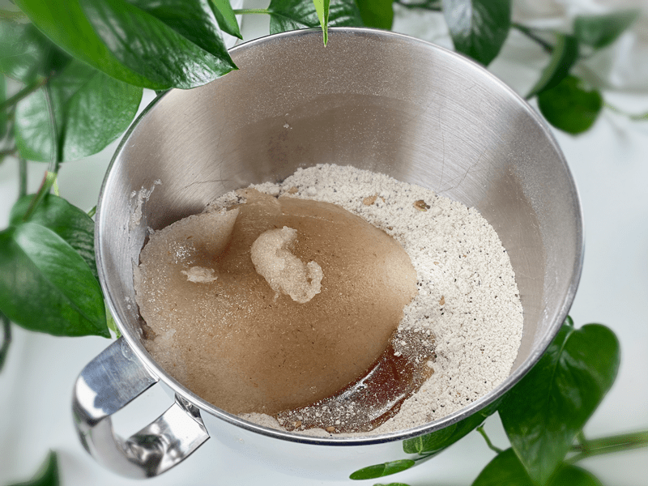
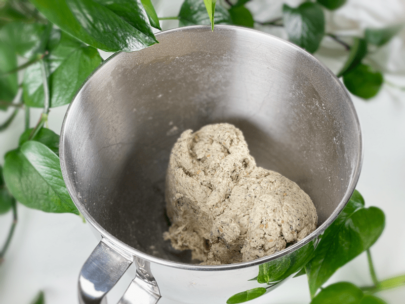
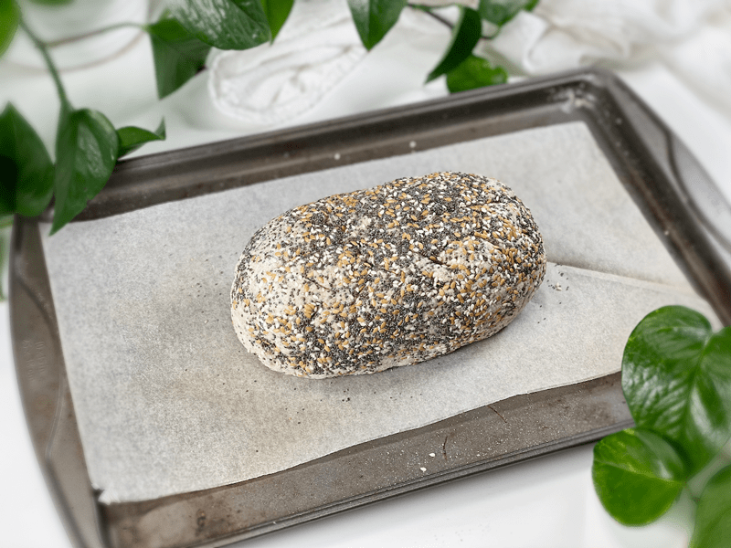
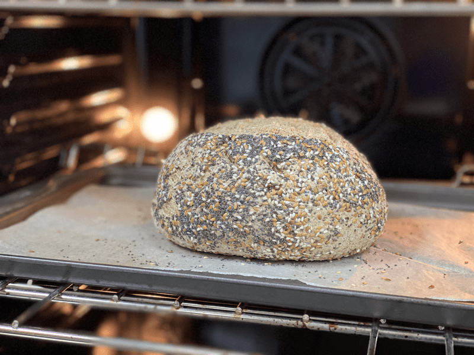
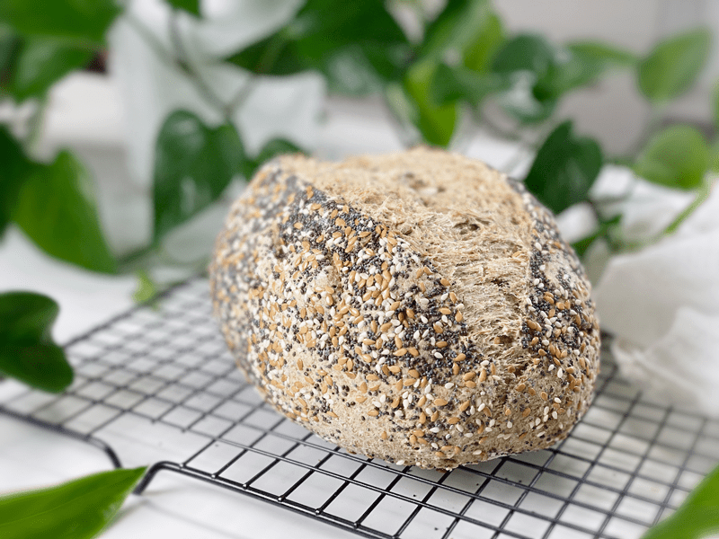

Seed Medley Bread | Oat-Free | Gluten-Free | Vegan | Yeast-Free
The densely woven seed mixture gives a wonderful contrast to the hearty, springy, and loosely dense bread texture. When toasted, the flavors amplify, and the bread, specifically the crumb, takes on another level of crispness that crackles constantly under the heat. It is easy to make, tastes fantastic, and is packed FULL of nutrients! This healthy bread is the perfect way to jumpstart your morning, give you a late- morning energy boost, or use for a satisfying lunch or light dinner!

This bread is loaded with 6 different types of seeds and has a signature crispy crust coated with even more seeds. It’s one of those types of bread where you better hope your partner will do a tooth-check on you once you are done enjoying your last bite–much like eating spinach, if you know what I mean.
Today, I tested the waters by omitting the rolled oats, which I use in my typical gluten-free blend mix. Instead, I upped the sorghum flour measurement and added in pumpkin seed flour (that I ground myself – no need to buy a special flour). I also added in a bit more arrowroot. I must admit, I am pleased as punch with the outcome of this bread. The texture and flavor are everything I look for in a gluten-free, vegan, yeast-free bread!

Seed Mix
Seeds are a tasty and healthy addition to homemade loaves of bread. They are an excellent source of healthy fats like monounsaturated fats and omega-3 fatty acids, which excite your taste buds with extra flavor and texture.
You can easily create your own mix of seeds; the only requirement is that the grand total of seeds used equals 1/2 cup. I used 4 teaspoons each of sesame seeds, flax seeds, poppy seeds, sunflower seeds, pumpkin seeds, and chia seeds.
Sunflower Seeds (their effect in bread)
Have you ever noticed how sunflower seeds turn a little green in baked goods? It turns out that sunflower seeds contain chlorophyll, also known as chlorogenic acid. When heated, this acid reacts with the baking powder/soda in a recipe and turns green. I noticed this just around the surface of the sunflower seed. The loaf itself didn’t turn green. So, don’t mistake this for your bread going bad.

Slashing / Scoring the Top of the Bread
Slashing your dough properly creates a beautiful loaf of bread, and can also help it rise in the oven. If your slashes are not deep enough, the dough may tear open on the top or bottom of the loaf, leaving you with bread that tastes delicious but doesn’t live up to its artistic potential. The loaf can also end up being a touch dense if you don’t slash deep enough, because it won’t open up and make way for a dramatic oven spring.
-
Use a very sharp knife. If your knife is dull or is caked with dough, it will pull at the dough instead of cutting through it.
-
Dust the dough with flour for the easiest cut. The flour helps the knife slide through the dough without sticking.
-
Slash/score depth: I like to make my cuts about 1/4” – 1/2” deep. If the slash is too shallow, you may have a blowout or a tear in the dough.
You know I like to take texture-shots for you. I cut this slice thin, so you can see how well it holds up. This bread will NOT crumble under pressure. Want to play a game with me? Me first — I spy a seed! (fingers crossed you know childhood-backseat-road-trip-car-game) This is really a lovely bread that tastes wonderful on its own, but it is neutral enough to pair well with ANY sandwich filling, jam, spread, or nut butter. I hope you give this recipe a try. Please leave a comment below. blessings, amie sue
 Ingredients
Ingredients
- 1 cup (125 g) sorghum flour
- 1 cup (158 g) raw hulled buckwheat, ground
- 1/2 cup (78 g) pumpkin seeds, ground
- 1/4 cup (40 g) arrowroot powder
- 1/2 cup (83 g) mixed seeds, see above
- 1 tsp (4 g) baking powder
- 1/2 tsp (3 g) baking soda
- 1 tsp (6 g) sea salt
- 2 Tbsp (40 g) maple syrup
- 2 Tbsp (30 g) water
Psyllium Gel
Topping
Preparation
Psyllium Gel
- Quickly whisk the water and psyllium husk powder in a mixing bowl. It will instantly start to gel, which is to be expected. Set aside while you prepare the remaining ingredients so it can thicken.
- Preheat the oven to 350 degrees (F).
- Line a baking sheet with parchment paper, sprinkled with a little extra flour.
Dry Ingredients
- In the mixing bowl that we are going to knead the bread in, whisk together the sorghum flour, buckwheat flour, pumpkin seeds flour, arrowroot, mixed seeds, baking soda, baking powder, and salt.
- For the buckwheat and pumpkin seed flour, place the whole kernels and seeds in the blender and grind to flour. Be careful that you don’t let it go too long, because the pumpkin seeds will gain moisture as the natural oils start coming out.
Mixing and Baking the Dough
- Add the psyllium gel, 2 Tbsp of water, and drizzle the maple syrup around the bowl.
- Using either a hand mixer or a free-standing mixer with dough attachments, knead for 5 minutes (set a timer on your phone) to ensure that it gets kneaded enough (don’t we all love feeling needed?).
- Start the mixer on low until the flour is folded in, then turn it up one speed. If you start off at too high a speed, the flour will jump out of the bowl.
- Shape the dough into a round or oblong shape and place it on the baking sheet.
- COAT the loaf with the same seeds you used in the bread. Don’t be shy.
- Score the top of the bread with the tip of a sharp knife, going no more than 1/2″ deep.
- Bake on the center rack for 50-60 minutes.
- Take the loaf out of the oven and turn it upside down. Give the bottom of the loaf a firm thump! with your thumb, like striking a drum. The bread will sound hollow when it’s done.
- When it’s done baking, slide it onto a cooling rack and wait to cut when cool.
Dutch Oven Method (if using)
- Place the empty Dutch oven and lid inside the oven and preheat the oven to 350 degrees (F).
- Once preheated and ready for baking, remove the Dutch oven and place it on the stove. Be careful not to touch the Dutch oven or lid without oven mitts, because they will be hot! Place the dough on a piece of parchment paper and transfer it into the HOT Dutch oven. Cover with the hot lid and bake for 50 minutes.
- Remove hot lid and bake another 10 minutes.
- Use the parchment paper to lift the bread out of the Dutch oven and cool on a wire rack until nearly room temperature before slicing.
Storage
- Once the bread has thoroughly cooled, you can wrap it. It should last up to roughly 5 days.
- Brown paper bag: This will better protect your loaf and allow for good air circulation, meaning that your crust won’t get soft. Some people claim that a sliced loaf stored cut-side down in a paper bag will stay the freshest.
- Plastic bag: If you want to avoid staling at all costs, go with a plastic bag. Make sure to get as much air out as possible before sealing. Your crust will soften, but your bread won’t dry out or harden prematurely. Make up for unwanted softness with toasting.
- Tea towel: Wrap the bread in a tea towel, then place it in the bread box.
- Fridge: Whether you store it in the fridge is up to you. Many people feel that bread in the fridge turns stale quicker. If you’re not going to finish a loaf in the first few days after baking it, you might want to freeze it until you’re ready to eat it.
- Freezing: Rather than freezing the loaf as a whole, slice it and place wax or parchment paper in between each slice before sliding it into a freezer-safe container. That way you can pull out 1,2, or as many slices as you want.
-

-
Combine all ingredients and knead for 5 minutes.
-

-
Not pretty, but this is what the dough looks like after kneading.
-

-
Shape, coat with seeds, score the top, and bake.
-

-
After 60 minutes of baking… perfection.
-

-
Allow the bread to cool before slicing… if possible.
© AmieSue.com